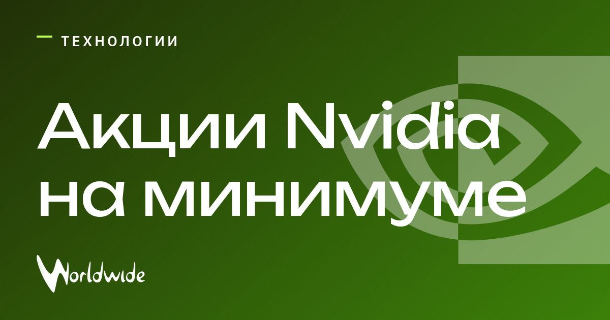

Акции Nvidia опустились до минимума с марта

Nvidia поручила независимое расследование бывшему федеральному прокурору Джуну Х. Киму.
Совет директоров проверяет обстоятельства отношений главы компании Дженсена Хуанга с предпринимательницей Элис Хуанг. СМИ сообщали, что её подозревают в работе на китайскую разведку; родства между ними нет.
Вместе с Кимом проверку ведёт Wachtell, Lipton, Rosen & Katz. Рыночная стоимость Nvidia за неделю сократилась примерно на 1 трлн $, а акции достигли минимума с марта.
Обновление
После падения акций на 6,5% Nvidia уступила Microsoft второе место по рыночной стоимости.
Источник: Fortune India